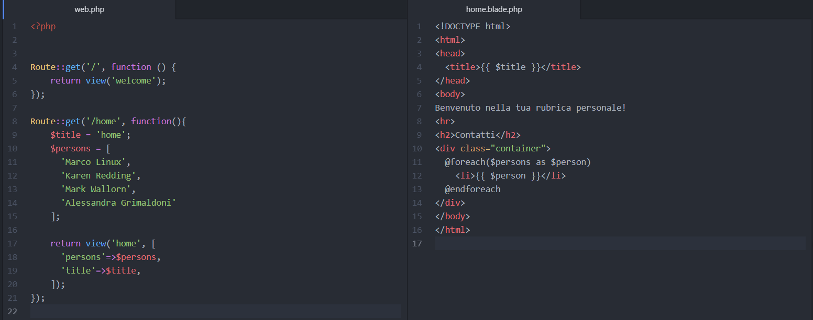
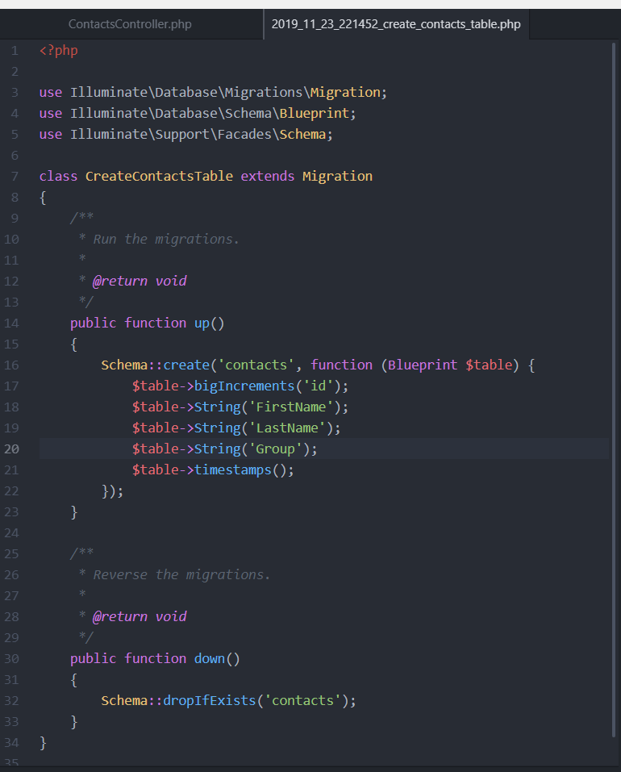

In questa prima parte del tutorial vedremo come creare un database adatto allo sviluppo in locale del nostro progetto Laravel.
Qualunque web app per immagazzinare e mostrare dei dati necessita di un database. Ce ne sono diversi, ognuno coi propri punti di forza e limitazioni. Uno dei punti di forza di Laravel, è che offre connettori per praticamente qualunque database esistente.
Nel nostro esempio utilizzeremo SQlite come database di sviluppo. La scelta è dovuta al fatto che è particolarmente facile da configurare (anzi, non necessita di quasi nessuna configurazione). Si tratta di un prodotto agile, leggero e con delle buone performance per progetti piccoli e leggeri, e ha il pregio di essere libero ed open source.
Ovviamente, si tratta di una scelta adeguata per un ambiente di sviluppo, per ambienti di produzione la nostra scelta ricadrà invece su altri Database, in particolare, la Vagrant Box che abbiamo scaricato, implementa già due Database che vengono lanciati all'avvio della macchina. Postgres e MySQL.
Il vantaggio di utilizzare SQLite in questa fase, è che in qualunque momento, possiamo cancellare un singolo file, e ricreare da zero il nostro progetto. Per questo primo progettino di esempio andrà più che bene, quando sarà ora di andare in produzione ed effettuare il deploy della nostra applicazione della Laravel University, testeremo il tutto su un Db MySQL.
Connettere il nostro progetto ad un database è particolarmente facile in Laravel, se volete saltare immediatamente a configurazioni più complicate, vi consiglio di consultare questo articolo sulla guida ufficiale alla sezione "Connecting To Your Databases".
Se invece avete scelto di seguire questo tutorial, avviate la macchina vagrant e connettetevi tramite il comando vagrant ssh.
Una volta dentro, portatevi nella cartella /database/ e date il comando touch databade.sqlite.
Tornando alla radice del progetto, aprite il file .env (potete visualizzarlo con ls -al) con il comando nano .env e modificate il file togliendo tutte le righe che iniziano per DB, tranne la prima, che dovete sovrascrivere con:
DB_CONNECTION=sqlite
.
Per essere sicuri che tutto funzioni, una volta salvato e chiuso il file .env, lanciamo il comando php artisan migrate, vedremo nei prossimi tutorial a cosa servono i comandi artisan, quello che per ora ci interessa, è che dovreste vedere un messaggio che vi dice che le migrazioni sono state effettuate con successo e che sono state create delle tabelle nel database.
Nota: se il file .env non fosse presente nella macchina, potete comunque copiare il file .env.example dopo averlo creato, e poi modificare le informazioni in esso contenute.
Prima di imparare ad usare i controllers e i modelli, iniziamo ad impratichirci con un assaggio di cosa possiamo fare con Blade.
Generalmente, un approccio che trovo sia vincente in questo genere di sviluppi, è sempre iniziare a creare una pagina con dei dati di test per vedere "come verrebbe", e per verificare che tutto sia in ordine.
Per prima cosa, modifichiamo il file routes/web.php e la vista home.blade.php coi codici proposti:

All'Url laravel.local/home dovremmo vedere una lista dei nomi che abbiamo messo nel vettore $persons del file web.php.
Nel routing abbiamo creato delle variabili di contesto e le abbiamo passate insieme alla vista come risposta all'utente. Presto impareremo come creare le varibili di contesto utilizzando dati residenti nel nostro database.
Quello che ci interessa, però, è vedere come abbiamo renderizzato queste variabili di contesto, ovvero il titolo e la lista delle persone.
Nel file home.blade.php, facciamo la conoscenza con le nostre prime direttive in Blade. Le variabili di contesto vengono renderizzate con la notazione {{ $chiave_variabile_di_contesto }}, nel nostro caso la variabile $title, che veniva passata alla vista con chiave 'title', era una stringa 'home', ed infatti se ci fate caso, il titolo della pagina nel tab del browser sarà esattamente quello.
l'altra direttiva con cui facciamo la conoscenza è @foreach(), che permette di eseguire un loop su una lista di oggetti.
Nel nostro caso, dopo aver creato una lista di stringhe, la passiamo alla vista come variabile di contesto, dopodichè, diciamo a Laravel di ciclare su quella lista, utilizzando come nome per la variabile attuale $person, e di stamparla, dopodichè chiudiamo il foreach.
Per una maggiore comprensione di tutte le direttive possibili disponibili in Blade, consiglio una veloce lettura Della guida ufficiale, almeno della parte riguardante le direttive per le iterazioni, le esecuzioni condizionali, e la stampa dei valori.
Analizziamo meglio il codice che abbiamo scritto nel file web.php:
Laravel, quando riceve una richiesta HTTP con metodo GET all'URL ./home esegue una callback, e restituisce come risposta una vista.
In questo caso, il metodo era piuttosto corto, ma immaginiamoci in una situazione reale: la nostra applicazione avrà magari decine di possibili URL a cui accedere, e magari ad ognuno di questi potranno arrivare richieste GET, POST, PUT, DELETE e vari altri metodi HTTP. Va da se che avere la logica e le query
verso il database in un unico file sarebbe abbastanza confusionario, e non in linea con la pulizia del codice tanto cara a Laravel.
Qui, interviene la seconda mattonella della architettura MVC, la prima erano le viste, ora vedremo cosa sono i controllers.
Invece di definire tutta la logica di gestione delle richieste nei file di routing, è possibile (e personalmente direi OBBLIGATORIO)
organizzare questo comportamento utilizzando le classi Controller.
I controller possono raggruppare la logica di gestione delle richieste correlate in un'unica classe.
I controller sono memorizzati nella directory app/Http/Controllers.
Generalmente un approccio che si tende a utilizzare, è quello di definire un Controller per ogni entità del nostro database, ovvero per ogni modello. Poichè non ne abbiamo ancora definiti,
per ora accontentiamoci di sapere che il nostro piccolo applicativo di esempio avrà sostanzialmente 3 entità: Contatti, Telefono, Email.
Ogni contatto potrà avere più numeri di Telefono e più Email associate.
Qui interviene una funzionalità interessante di Laravel: la possibilità di creare i controllers tramite php artisan. Abbiamo già fatto la conoscenza di questo potente strumenti
quando abbiamo effettuato la prima migrazione del database.
Senza perdere altro tempo, creiamo il nostro primo controller.
Un elemento fondamentale delle applicazioni web è la possibilità di rendere i dati persistenti in un database. Generalmente, a meno di esigenze particolari
si tende ad organizzare i dati in dei database relazionali.
Il design di un database relazionale può essere visto come una serie di tabelle interconnesse tra di loro, ogni tabella costituisce un oggetto, o modello.
Le colonne sono i campi che compongono un oggetto, mentre le righe sono i singoli record.
Se ad esempio proviamo ad immaginarci il database di una libreria, avremo un modello "Libro", che conterrà delle informazioni, come ad esempio l'autore, il codice ISBN, la versione di stampa, lo stato, il riassunto, il numero di pagine.
Ogni singolo libro sarà un record della tabella.
Il design di un database (o modello dati), è un compito che richiede esperienza, pazienza e ottime conoscenze di quello che si sta sviluppando, è un processo non banale e che richiede molta attenzione, tanto
che esistono tonnellate di libri, pattern e metodologie sull'argomento, per questo non ci addentreremo nella teoria.
Posso solamente dirvi questo: perdeteci molto, molto tempo! Il design di una buona struttura dati vi eviterà parecchi mal di pancia.
Una regola generale, da tenere bene a mente è di scomporre il più possibile le entità e poi relazionarle fra loro, se avete un oggetto con venti campi, forse sarebbe il caso di chiedersi se magari non sarebbe opportuno scomporlo in oggetti più piccoli.
Fatta questa doverosa digressione, concentriamoci sul compito che ci siamo proposti: vogliamo creare il nostro primo modello, ovvero la tabella che dovrà contenere i dati dei nostri contatti.
La prima cosa da tenere a mente, è che per convenzione un modello deve avere come nome il nome della singola entità, nel nostro caso, poichè stiamo parlando di contatti (Contacts),
il nostro modello si chiamerà Contact.
Creare un modello è semplice, esattamente come per quando abbiamo lanciato il comando di creazione del controller, connettiamoci in ssh alla macchina virtuale, e dalla root del progetto lanciamo il seguente comando:
php artisan:make model Contact -m.
Questo comando creerà un file nella directory ./database/migrations con un nome simile a questo: 2019_11_23_221452_create_contacts_table.php.
Questo file, una volta che avremo effettuato le migrazioni, creerà una nuova tabella nel nostro DB, per cui, possiamo andare a definire le colonne
del nostro oggetto Contatto. Per maggiori informazioni sulla creazione di tabelle in Laravel, qui trovate il solito link alla documentazione ufficiale.
I contatti dovranno contenere tre stringhe Nome, Cognome, e gruppo (amici, parenti, sport, lavoro, altro).
Tramite questo file, prima di effettuare la migrazione possiamo andare a definire quali saranno le colonne.

Come ultimo passaggio, effettuiamo la migrazione con php artisan migrate.
Ci siamo! abbiamo creato il nostro primo modello! Ora possiamo aggiungere e creare dei contatti, cancellarli, e modificarli!
Nel prossimo capitolo impareremo come utilizzare la riga di comando per inserire dei dati di prova nel nostro database, come effettuare delle query, e come aggiungere altri campi al nostro DB.
Torna alla home.